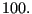

Next: *GAP HEAT GENERATION Up: Input deck format Previous: *GAP Contents
Keyword type: model definition, surface interaction
This option allows for the definition of the conductance across a contact pair. The conductance is the ratio of the heat flow across the contact location and the temperature difference between the corresponding slave and master surface (unit: [energy]/([time]*[area]*[temperature])). The gap conductance is a property of the nonlinear contact spring elements generated during contact. This means that heat flow will only take place at those slave nodes, at which a contact spring element was generated. Whether or not a contact spring element is generated depends on the pressure-overclosure relationship on the *SURFACE BEHAVIOR card.
The conductance coefficient can be defined as a function of the contact pressure and the mean temperature of slave and master surface. Alternatively, the conductance can be coded by the user in the user subroutine gapcon.f, cf Section 8.4.11. In the latter case the option USER must be used on the *GAP CONDUCTANCE card.
First line:
Following sets of lines define the conductance coefficients in the absence of the USER parameter: First line in the first set:
Use as many sets as needed to define complete temperature dependence.
Example: *GAP CONDUCTANCE 100.,,273.
defines a conductance coefficient with value  for all contact pressures and all temperatures.
Example files: .